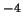
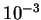
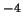
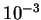

The system of equations (2.52)-(2.55) has the usual
difficulties of viscous incompressible fluid dynamics: the
continuity constraint and the nonlinearity of the advection terms.
In many cases these can be handled by the simple penalty method
(Gresho 1988),
but this gives poor results for this problem for nonzero
mass transfer (
 ) because of the transpiration
boundary condition as described in the previous section.
Further, the penalty method does not
provide an accurate solution for the pressure field, which is important
here since the unknown constant,
) because of the transpiration
boundary condition as described in the previous section.
Further, the penalty method does not
provide an accurate solution for the pressure field, which is important
here since the unknown constant,  , of the fully developed solution
occurs in the expressions for the vertical component of velocity and the
pressure (4.27)-(4.28).
, of the fully developed solution
occurs in the expressions for the vertical component of velocity and the
pressure (4.27)-(4.28).
One of the next simplest algorithms is the
augmented Lagrangian technique (Thomasset 1984).
This differs slightly from the augmented Lagrangian technique presented
in the Fastflo Tutorial Guide (CSIRO 1997, p. 117)
in that the set of
equations for momentum, temperature and mass fraction are solved by
underrelaxtion of the advection--including interdiffusion--terms
before each pressure update.
A relaxation factor of 0.5 was used, with a convergence tolerance
of 5 10 in the relative change in the solution variables.
The penalty factor for the divergence was 500; no relaxation was
employed for the pressure updates. The outer (pressure) loop was continued
until the divergence of the calculated velocity field (normalized by the
maximum nodal velocity component) was less than , thus ensuring
an accurate pressure solution, as required for the determination of the
unknown constant,
10 in the relative change in the solution variables.
The penalty factor for the divergence was 500; no relaxation was
employed for the pressure updates. The outer (pressure) loop was continued
until the divergence of the calculated velocity field (normalized by the
maximum nodal velocity component) was less than , thus ensuring
an accurate pressure solution, as required for the determination of the
unknown constant,  .
.
This approach was found to be more robust with respect to the continuity difficulties mentioned in the previous section than that described in the Fastflo Tutorial Guide, where the pressure is updated between each iteration of the momentum equation. The method employed here differed from Thomasset's only in that the basis functions for the unknowns were conforming quadratics, except for pressure for which they were linear.
The first run through the outer loop of the augmented Lagrangian
algorithm is identical to the simple penalty method. With
the penalty factor employed here, typically 10-20 pressure updates were
required for satisfaction of the continuity constraint to the prescribed
level. The (normalized) divergence
at the end of the first loop was usually extreme, with values of several
hundred
percent not uncommon. The use of a larger penalty parameter, which
would usually enforce continuity more strongly, here resulted in
spurious pressure gradients normal to the mass transfer interfaces,
 .
.
The algorithm was by no means fast, runs taking typically in excess of two hours on a 150MHz Silicon Graphics Indy R5000, but did provide accurate solutions. Algorithms more sophisticated than the penalty and augmented Lagrangian methods, such as the Fastflo operator splitting technique (CSIRO 1997, pp. 180-203) certainly exist and should be investigated for further research into this class of flows.